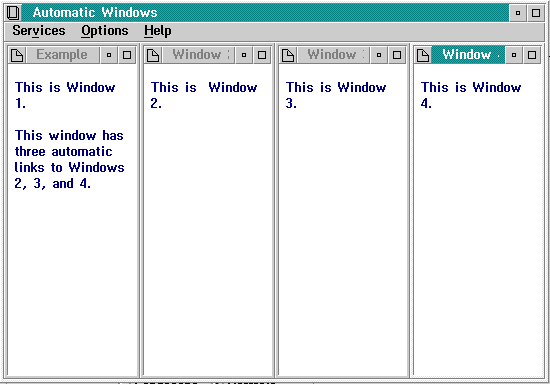
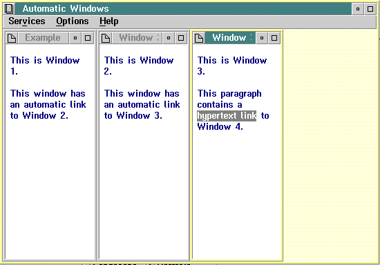

The following tagging example defines two automatic window chains. A window chain has at least one owner window, and an owner window has one or more automatic or hypertext links to other windows in the chain. When an owner window closes, the windows in its chain that have specified the dependent attribute also close.
In "Example 1," the only owner window in the chain is the first window (res=008). It contains links to three other automatic windows, which are referred to as sibling windows of the owner window.
In "Example 2," Windows 1 through 3 in the chain are owner windows. Window 1 owns all the windows in the chain and can close all of them. Window 2 also owns Windows 3 and 4. Window 3 also owns Window 4, the last window in the chain, which is displayed by means of a hypertext link in the text.
:h1.Automatic Windows
:h2 res=008
x=left y=top width=25% height=100%
scroll=none group=1 clear.
Example 1
:link reftype=hd res=009
vpx=25% vpy=top vpcx=25% vpcy=100%
group=2 auto dependent.
:link reftype=hd res=010
vpx=50% vpy=top vpcx=25% vpcy=100%
group=3 auto dependent.
:link reftype=hd res=011
vpx=75% vpy=top vpcx=25% vpcy=100%
group=4 auto dependent.
:p.
This is Window 1.
:p.
This window has three automatic links to
Windows 2, 3, and 4.
:h2 res=009
x=25% y=top width=25% height=100%
scroll=none hide.
Window 2
:p.
This is Window 2.
:h2 res=010
x=50% y=top width=25% height=100%
scroll=none hide.
Window 3
:p.
This is Window 3.
:h2 res=011
x=75% y=top width=25% height=100%
scroll=none hide.
Window 4
:p.
This is Window 4.
:h2 res=012
x=left y=top width=25% height=100%
scroll=none group=1 clear.
Example 2
:link reftype=hd res=013
vpx=25% vpy=top vpcx=25% vpcy=100%
group=2 auto dependent.
:p.
This is Window 1.
:p.
This window has an automatic link to
Window 2.
:h1 res=013
x=25% y=top width=25% height=100%
scroll=none hide.
Window 2
:link reftype=hd res=014
vpx=50% vpy=top vpcx=25% vpcy=100%
group=3 auto dependent.
:p.
This is Window 2.
:p.
This window has an automatic link to
Window 3.
:h1 res=014
x=50% y=top width=25% height=100%
scroll=none hide.
Window 3
:p.
This is Window 3.
:p.
This paragraph contains a
:link reftype=hd res=015
vpx=75% vpy=top vpcx=25% vpcy=100%
group=4 dependent.
hypertext link
:elink.
to Window 4.
:h1 res=015
x=75% y=top width=25% height=100%
scroll=none hide.
Window 4
:p.
This is Window 4.

Example of four automatic windows.
When "Example 1" is selected from the Contents window, four windows are displayed in rapid succession. When Window 1 is closed, all four windows close.
The following figure shows the windows that are displayed when "Example 2" is selected from the Contents window.

Example of three automatic windows.
Notice Window 4 is not displayed. To display Window 4, you must select the hypertext link in Window 3.
Note: You can use the viewport attribute on an automatic link, because an automatic link is made only once.